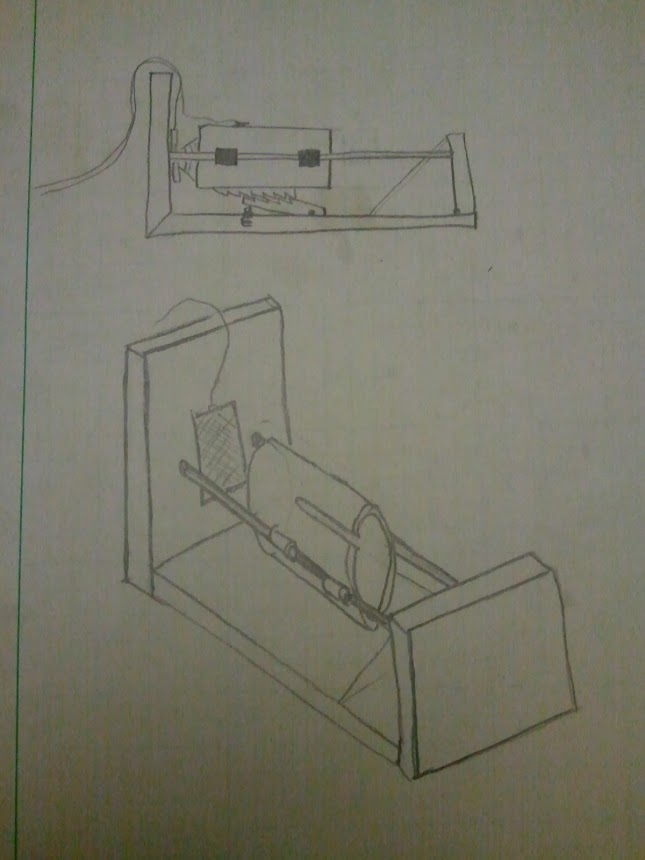
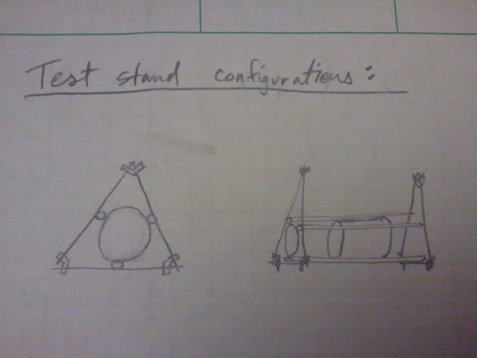

Forums » Discussion »
Future Design Discussion - v1.1
Added by Jeremy Wright about 10 years ago
The following is a suggestion on affordable force sensors from Pierce Nichols of Logos Electromechanical (logos-electro.com) via email:
Check out http://aeroconsystems.com/cart/load-cells/. Get a 20 kg load cell from them and an amplifier from me (http://www.logos-electro.com/1x3-ana-brdg-2/) and you're out the door for $80. If you want a lower range and are willing to spend a bit more, check out Omega's low force sensors (http://www.omega.com/toc_asp/subsectionSC.asp?subsection=F07&book=Pressure), again with one of my amplifiers. You shouldn't have any trouble getting out the door for sub-$200.
Replies (41)
RE: Future Design Discussion - v1.1 - Added by Jeremy Wright about 10 years ago
This is a suggestion via email from John Yeh of Link Instuments (linkinstruments.com) on a better thermocoule amplifier.
Try this chip http://www.ti.com/lit/ds/symlink/ads1118.pdf This will give you up to 860 samples per second. If you run two units and alternate the CS pin, you should be able to double the sample rate.
RE: Future Design Discussion - v1.1 - Added by Ben Barnett about 10 years ago
I haven't run the numbers, but if 12bit A/D is adequate, look at the ADS1018 on the same data sheet.
http://www.ti.com/lit/ds/symlink/ads1118.pdf
It runs 3300 samples/sec. at 12bit resolution vs the ADS1118 with 16 bits at 860 samples/sec.
If I ever get a little spare time I will run the numbers on the whole analog and A/D section and see if I can improve the performance/cost of the measurement system. Note that my area is mostly analog hardware, and I will leave the digital stuff to others.
Ben
RE: Future Design Discussion - v1.1 - Added by Jeremy Wright about 10 years ago
Pierce Nichols just sent me this link on discount load cells via email. He says the S-beam types are among the easiest to integrate mechanically.
http://discountloadcells.com/ds-diamond-s-type-c-105_760.html
RE: Future Design Discussion - v1.1 - Added by Jeremy Wright almost 10 years ago
Based on discussions that we've had during hangouts, I'm going to suggest the following. Version 1.1 of Shepard will only include a properly spec'd FSR and updated software. Shepard version 2.0 will incorporate the DAQ feedback that we've gotten above as well as receive a mechanical redesign/facelift consistent with a level 1 kite that can be kitted.
RE: Future Design Discussion - v1.1 - Added by J. Simmons almost 10 years ago
Jeremy Wright wrote:
Based on discussions that we've had during hangouts, I'm going to suggest the following. Version 1.1 of Shepard will only include a properly spec'd FSR and updated software. Shepard version 2.0 will incorporate the DAQ feedback that we've gotten above as well as receive a mechanical redesign/facelift consistent with a level 1 kite that can be kitted.
Concur on the general roadmap. I have one comment/suggestion. I think we should look at whether we can do the DAQ and mechanical in one step or if they should be done in two. Perhaps a v1.5 that updates the mechanical system and v2.0 that updates the DAQ.
RE: Future Design Discussion - v1.1 - Added by Jeremy Wright almost 10 years ago
Or should we break the DAQ and mechanical systems out into separate sub-projects with their own versioning schemes (starting at 1.0)?
One drawback to that would be if Shepard's DAQ system ended up being good enough to use on the level 2 kite. In that case I'm guessing that we would want the DAQ system to be a completely separate project.
RE: Future Design Discussion - v1.1 - Added by Jeremy Wright almost 10 years ago
The following items have been stored as notes on my phone for months and needed to be placed here.
Possible Mechanical Upgrades- Use Misumi extruded aluminum instead of wood for the test stand structure.
- Use Makerslide for the motor mount's linear guide.
- Use Ethernet instead of USB for data transfer.
I'm still working to finish up the docs for Shepard v1.0 and Far Horizons v1.0, and will start in on testing the validity of these upgrade suggestions when I get caught up.
RE: Future Design Discussion - v1.1 - Added by Jeremy Wright almost 10 years ago
Would someone please double check my numbers by telling me what the measurement range (in pounds) is for this FSR? I'm not seeing the same numbers that I thought I did a couple of months ago, and I would like someone to verify the numbers so we can put the issue of this FSR's range to rest.
Spec Sheet:
http://www.trossenrobotics.com/productdocs/2010-10-26-DataSheet-FSR406-Layout2.pdf
Product Page:
http://www.trossenrobotics.com/store/p/6496-1-5-Inch-Force-Sensing-Resistor-FSR-.aspx
This page has some info on it that may have been what led me astray before.
http://www.trossenrobotics.com/productdocs/FSR_Integration_Guide.pdf
Thanks.
RE: Future Design Discussion - v1.1 - Added by J. Simmons almost 10 years ago
I think I found it. Page 2 of the first document (FSR 406 Data Sheet), second line in the table, "Force Sensitivity Range" = 0.1 - 10.0 N.
RE: Future Design Discussion - v1.1 - Added by Jeremy Wright almost 10 years ago
Isn't that value 10.0^2 N though, making it 100 N? Also, the website shows the "Force Range" to be "<1N to >100N". If that's correct, we should have plenty of head room for all of the motors we're testing. The curve was definitely topping out too soon during our tests, so I'm thinking it must be the way the voltage divider is set up in the circuit. I based the circuit off of someone else's work, so maybe it's just the fact that I didn't double check their numbers that's caused this issue. I'm kind of hoping that's the case because simply running the numbers and then swapping out one resistor should fix the problem.
RE: Future Design Discussion - v1.1 - Added by J. Simmons almost 10 years ago
I thought that "2" was a squared as well, but that would make the units N^2 and that didn't make sense for a force measurement. So I looked again and realized it is a very poorly placed footnote (see bottom of the page for the note). Which means the range only goes up to 10.0 N.
RE: Future Design Discussion - v1.1 - Added by Jeremy Wright almost 10 years ago
I looked at this FSR yesterday. It has the range, sensitivity, and linearity to be a good replacement for the current FSR I think.
http://www.tekscan.com/pdf/A401-force-sensor.pdf
It costs more than the original FSR, but should still fit within the budget. I'm checking to see if you can buy them individually instead of in packs of 2 through 8.
RE: Future Design Discussion - v1.1 - Added by Aaron Harper almost 10 years ago
Hi Jeremy,
We have used this sensor for years and have found that it gives a faster and more linear response without the drift we encountered with other FSRs. The only gotcha is that the readings can be skewed if the backing is not flat and solid (epoxy flexes) and the contact plate isn't parallel to the backing plate. If you have to buy two, I'll buy the extra one off of you. I have attached the documentation we had for the sensor usage.
Best,
Aaron
FlexiForce-Sensors-Manual.pdf (400.4 kB)
RE: Future Design Discussion - v1.1 - Added by J. Simmons almost 10 years ago
Looks good to me. Our max load is 7.4 lbf (32.9 N) when testing D motors, and this sensor goes up to 25 lbf. And, Aaron, the pdf you attached is very helpful. Thanks!
RE: Future Design Discussion - v1.1 - Added by Jeremy Wright almost 10 years ago
Excellent, thanks Aaron.
It looks like SparkFun sells these FSRs individually.
https://www.sparkfun.com/search/results?term=flexiforce&what=products
I'll get one of these on order.
RE: Future Design Discussion - v1.1 - Added by Jeremy Wright almost 10 years ago
I did an experiment tonight where I disabled the Arduino's code to read the thermocouple amplifier (the one that takes 70 to 100 ms for each read). I just hard coded a dummy value of 0.0 for the temp, so all the Arduino had to do was read the voltage from the FSR and send the data over serial. The sample rate that I ended up with is about 825 samples per second. Divide that by two, and we should be able to get somewhere around (and probably over) 400 samples per second for two analog voltage channels.
Another digital thermocouple amplifier was mentioned above as a replacement for the current one. It works much like the MAX31855 that we're using now, but it offers 860 samples per second. I'm not sure how long it will take the Arduino to read the data over the ADS1118's SPI interface though. One of the informal goals that we set for version 1.1 of the test stand was 150 samples per second, with an upper-end goal of 250. It seems like we should be able to get that.
For any thermocouple amplifier we use on version 1.1, it would be best if it came in a DIP package and didn't require any crazy support circuitry to make it work. That is if we want me doing the circuit and finishing it in a reasonable time frame anyway.
Are there any thoughts on this?
_22_42_20.csv (36.8 kB)
RE: Future Design Discussion - v1.1 - Added by Jeremy Wright almost 10 years ago
There's one thing that we need to keep in mind that I don't think ever got documented on version 1.0 of the test stand structure. While at Club Cyberia , J and I noticed that the contact and backing plates for the motor mount and the FSR weren't perfectly parallel. Aaron's mention of that above just reminded me. On the version 1.1 structure we should shoot to correct that problem as much as possible when working with wood.
RE: Future Design Discussion - v1.1 - Added by Aaron Harper almost 10 years ago
Not to be a pain, but why are we still working with wood beyond the proof of concept and demo stages? Between the proximity of flame and change of tolerance changes due to moisture and humidity would it be advantageous to move to aluminum extrusions despite the change in cost. Speaking of that, what would it take to mount a drawer slide to the extrusion as opposed to mounting a makerslide to wood?
RE: Future Design Discussion - v1.1 - Added by Jeremy Wright almost 10 years ago
Aaron - Valid questions. I would like to move toward something like Misumi extruded aluminum and Makerslide for version 2.0 of Shepard. Version 1.1 is an incremental development where we fix the primary problems with version 1.0. We're also trying to get version 1.1 done quickly for a partner organization that wants to get their feet wet with motor testing, so reusing the wood structure with some incremental improvements has the added advantage of getting it into their hands quickly.
I agree with your critique of using wood for the structure. I've got the Misumi structure in my head for 2.0, I just have to get version 1.1 ready for public consumption first. I'll post my sketches for review once 1.1 is ready to go.
Here's a list of the main problems that we've found with the version 1.0 design.
RE: Future Design Discussion - v1.1 - Added by Aaron Harper almost 10 years ago
Gotcha. With such a low scan rate on the sensor, you would never notice deflection or non-linearity due to the material anyway, but we're fixing that too.
Any ideas on how to prevent the fouling of the slide, or is that the reason for evaluating a move to the makerslide?
RE: Future Design Discussion - v1.1 - Added by Jeremy Wright almost 10 years ago
I haven't seen the design change yet since J just got it done, but he has shielded the drawer rail by extending the motor mount plate I believe. I'll get info on the design change posted soon. Ideally we would make these changes on ODE and discuss them before implementing them, but with this being an incremental change and with the time constraints, we're cheating a little. I'm waiting for an engineering process fairy to pop up and smack my knuckles with a ruler for cutting such corners though.
The move to the Makerslide is a personal preference of mine, but I wouldn't be opposed to continuing with the drawer slide if we can make it work, and if that's what our development team decides on for version 2.0.
I forgot to address one comment you made about the wood construction above. The wood in the structure is exposed to flame, but we've had good luck on this version by using heat resistant paint.
RE: Future Design Discussion - v1.1 - Added by Aaron Harper almost 10 years ago
In my experience, the engineering process fairy is fairly forgiving as long as the process is documented eventually and results are obtained within the timeline. :) I figured you treated the wood with something... You and J would lose sleep if you didn't.
For v2.0 have you considered using 3D printed parts (shielded from heat) and the same 7mm smooth rod and LM7UU bearings you would use on a 3D printer? Mounting 2 of these rails on either side of the engine holder with 4 linear bearings (similar to the X axis of a Reprap) may work and would provide a fairly easy way to build the parts. I figure if 3D printed parts can hold up for hours close to a heated bed and print head, it will be fine for the brief impulse of radiant heat from the engine plume, particularly if shielded with something like this: http://www.jegs.com/i/JEGS+Performance+Products/555/32075/10002/-1. The thing these parts will not give you is the mass that would help with stability.
RE: Future Design Discussion - v1.1 - Added by Jeremy Wright almost 10 years ago
What you're proposing is very similar to a Shepard 1.0 preliminary design that Greg proposed quite awhile ago.

Ideally, what I'd like to see during the preliminary design phase for v2.0 is several competing design sketches (including my own) so that we can work through the pros and cons of each design to see what falls out. We didn't start with many visuals or any sketches in the preliminary design Hangout for version 1.0, and I think the process suffered because of that. That's just my opinion, but I think it's backed by the fact that the design we came up with in the Hangout has very little resemblance to what J actually built for the Open Hardware Summit. Greg had also voiced a very valid concern that the design was overly complicated for a level 1 kite. Below is a simplified representation of the original Shepard preliminary design that Greg did when he was trying to understand what we were talking about.

Gregs_Test_Stand_Concept.jpg (48.4 kB)
{kind=link}
Shepard_1_0_Preliminary_Concept.jpg (59.7 kB)
{kind=link}
RE: Future Design Discussion - v1.1 - Added by Aaron Harper almost 10 years ago
My thought was similar to Greg's, but make both end pieces out of ABS or PLA and leave the back open to allow the gasses to vent without hitting the plastic. Join the front and back halves with threaded rods. The carriage could be plastic too as long as the engine mount and ejection charge deflectors are insulated. This would also allow the front bulkhead to hold the sensor mounted to a thin steel plate and the microcontroller on the other side under a cover. The trouble is, as light as this would be that it would move around with a big engine enough to reduce the sensed thrust.
RE: Future Design Discussion - v1.1 - Added by Jeremy Wright almost 10 years ago
Here's a great metal enclosure with pre-drilled flanges for the Arduino and a shield, but it would put us over budget for this rev of Shepard.
https://www.sparkfun.com/products/10033
It would make Shepard a lot easier to transport and operate though.